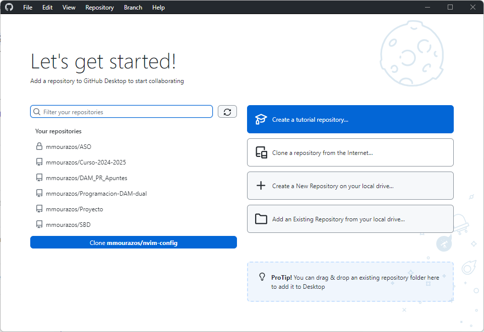
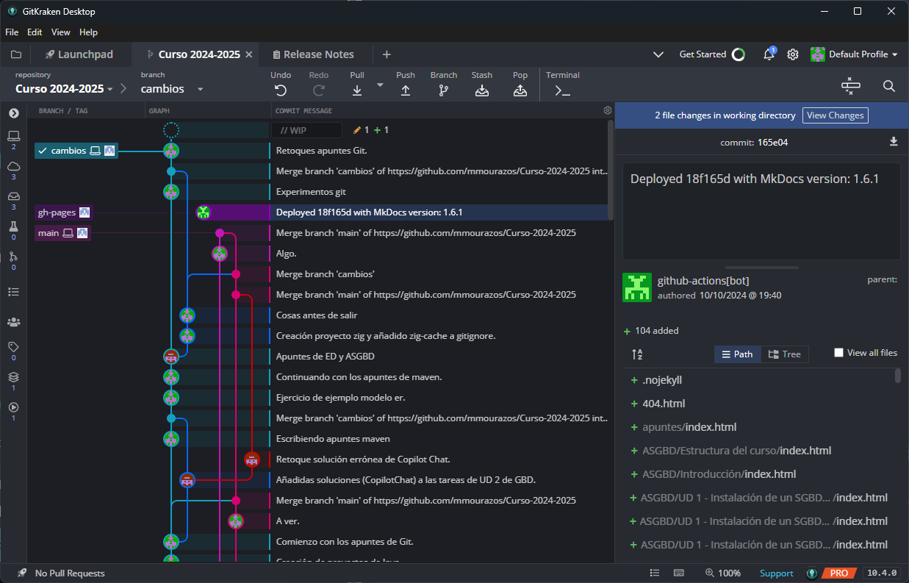

Apuntes de Git
- Apuntes de Git
- ¿Qué es Git?
- Utilidad de GIT
- Características de GIT
- Instalación de GIT
- Configuración de GIT
- Comandos básicos de GIT
- GUIs de GIT
¿Qué es Git?
Git es un sistemas de control de versiones que surgió en el 2005. Su desarrollo surgió a raíz de la necesidad de un sistema de control de versiones que permitiera gestionar el desarrollo del kernel de Linux. Aunque existen otros sistemas de control de versiones, Git se ha convertido en uno de los más populares y extendidos en la actualidad.
Los objetivos que se buscaban con la creación de Git eran los siguientes:
- Velocidad.
- Diseño sencillo.
- Soporte para desarrollo no lineal (miles de ramas paralelas).
- Totalmente distribuido.
- Capaz de manejar grandes proyectos como el kernel de Linux eficientemente.
¿Qué es un sistema de control de versiones?
Un sistema de control de versiones (VCS: Version Control System) es un sistema que registra los cambios en un conjunto de archivos (un proyecto) en forma de instantáneas a lo largo del tiempo. Estas instantáneas nos permiten conocer quién ha realizado un cambio, cuándo se ha realizado y qué se ha cambiado. Si necesitamos retroceder a una versión anterior de un fichero o de un proyecto completo, podemos hacerlo.
También hemos de tener en cuenta que este registro no tiene como objetivo ser un histórico de los cambios, sino una forma de colaborar con otros desarrolladores en un proyecto. Por tanto, se pueden alterar tanto en contenido como la estructura de las instantáneas.
Aunque los VCS son muy utilizados en el desarrollo de software, también se pueden utilizar en otros ámbitos, como el diseño gráfico, la redacción de documentos, etc.
Utilidad de GIT
GIT es un sistema de control de versiones distribuido, es decir, todos aquellos que participen en un proyecto gestionado mediante Git podrán disponer de una copia del mismo. Esto permite tanto trabajar sin conexión a Internet como tener una copia de seguridad del proyecto. Si el repositorio central falla, se puede recuperar el proyecto a partir de cualquiera de las copias locales. Es decir, no hay un único punto de fallo.
Un repositorio en Git es un directorio (oculto) que contiene todas las versiones de los archivos de un proyecto, así como los metadatos necesarios para gestionar el proyecto. En un proyecto gestionado con Git, cada usuario tiene una copia completa del repositorio (de ahí que Git se considere distribuido).
Características de GIT
- Git es un sistema de control de versiones distribuido de manera que no tiene un único punto de fallo.
- Cada usuario tiene una copia local completa del repositorio.
- Git es Open Source y gratuito.
- Está diseñado para manejar proyectos de cualquier tamaño con rapidez y eficiencia.
- Casi todas las operaciones son locales (aunque posteriormente se pueden sincronizar con un servidor remoto).
- No es necesario estar conectado para trabajar.
- Git siempre añade datos. Nunca los borra.
- Esto es importante porque si borramos algo por error, siempre podemos recuperarlo. Y si lo subimos por error, no siempre podemos borrarlo (al menos fácilmente).
Tres estados de GIT
Todo archivo gestionado en un repositorio de GIT puede estar en tres estados:
- Modificado (modified): hemos cambiado un fichero pero no lo hemos guardado en la base de datos.
- Preparado (staged): hemos marcado un fichero modificado en su versión actual para que vaya en la próxima instantánea (commit).
- Confirmado (committed): hemos guardado los cambios (de los ficheros previamente marcados, staged) en la base de datos como una instantánea.
Tres áreas de GIT
- Directorio de trabajo (working directory): donde se encuentran los archivos de nuestro proyecto. Aquí podremos tener los ficheros vigilados (tracked) por Git o no vigilados (untracked).
- Área de preparación (staging area): donde se encuentran los archivos marcados (staged) para la próxima instantánea (commit).
- Directorio Git (Git directory): donde GIT guarda los metadatos y la base de datos de los cambios. Aquí se encuentra la historia del proyecto. De nuevo, recordar que la historia se puede modificar.
Los ficheros con los que estamos trabajando, es decir, editando, modificando, compilando, etc. son los que se encuentran el el directorio de trabajo.
Flujo de trabajo básico en GIT
Git no prescribe un flujo de trabajo concreto, si no que proporciona las herramientas necesarias para que cada equipo de desarrollo pueda definir su propio flujo de trabajo.
Una forma básica de usar Git podría ser la siguiente (aunque hay muchas otras formas):
- Realizamos cambios en los archivos de nuestro proyecto.
- Selecciones los archivos que queremos incluir (staged) en la siguiente instantánea (commit).
- Realizamos el commit para salvar los cambios en forma de una instantánea.
Instalación de GIT
En Linux (Ubuntu)
Git está incluido en la mayoría de gestores de paquetes de las distribuciones de Linux. Para instalarlo en Ubuntu, usamos el siguiente comando:
sudo apt install git
En Windows
La forma más sencilla de instalar git en Windows (versiones 11 y algunas de Windows 10) es usar la herramienta de línea de comandos winget. Para ello, usamos el siguiente comando:
winget install git.git
Configuración de GIT
Git necesita saber quién eres para poder registrar los cambios que realizas en un proyecto. Por tanto, es necesario configurar tu nombre y tu dirección de correo electrónico antes de poder realizar un commit. Para ello, usamos los siguientes comandos:
git config --global user.name "mourazos"
git config --global user.email "mourazos@iessanclemente.net"
Esto no es estrictamente necesario si utilizamos Git para proyectos personales sin usar un repositorio remoto. Pero como el uso más común de Git es colaborativo, es necesario establecer estos valores.
.gitignore
Es importante evitar que Git incluya en nuestro proyecto ficheros que no queremos compartir o hacer públicos (como ficheros temporales, ficheros de configuración, tokens, claves, etc.). Esto es especialmente importante si tenemos pensado compartir nuestro proyecto en un repositorio público en alguno de los servicios de alojamiento de repositorios (como GitHub, GitLab, Bitbucket, etc.).
Para indicar a Git qué ficheros o directorios ha de ignorar, podemos crear un fichero llamado .gitignore en la raíz del proyecto. En este fichero podemos incluir los nombres de los ficheros o directorios que queremos que Git ignore.
Por ejemplo, si queremos que Git ignore los ficheros ejecutables o el directorio node_modules (que contiene las dependencias de un proyecto Node.js), podemos añadir las siguientes líneas al fichero .gitignore:
# Ignora los ficheros con extensión .exe, .sh y .bat
*.exe
*.sh
*.bat
# Ignora el directorio node_modules
node_modules/
Se puede consultar una referencia de los patrones a usar dentro de .gitignore en la documentación de Git.
Comandos básicos de GIT
Inicializar un repositorio
Para inicializar un repositorio en un directorio, usamos el comando git init.
Esta instrucción crea un directorio .git en el directorio actual. Este directorio contiene todos los metadatos y la base de datos de los cambios del proyecto. Si borramos este directorio, perderemos todo el historial del proyecto.
Ver el estado de los archivos
Para ver el estado de los archivos en un repositorio, usamos el comando git status.
Clonar un repositorio
Para clonar un repositorio, usamos el comando git clone url_repositorio directorio_destino.
Este comando crea en el directorio de destino una copia completa del repositorio indicado en la URL.
Añadir archivos al área de preparación (staging area)
Para añadir un archivo al área de preparación, usamos el comando git add nombre_archivo.
Si queremos añadir todos los archivos modificados al área de preparación, usamos el comando git add ..
Realizar un commit
Para realizar un commit, usamos el comando git commit -m "mensaje_commit".
Si queremos añadir todos los archivos modificados al área de preparación y realizar un commit, podemos usar el comando git commit -am "mensaje_commit".
Remotos
Los repositorios remotos son versiones de tu proyecto que se encuentran alojadas en Internet o en una red. Puedes tener varios repositorios remotos, cada uno de los cuales puede ser de solo lectura o de lectura/escritura.
Para ver los repositorios remotos de un proyecto, usamos el comando git remote -v.
Añadir un repositorio remoto
Para añadir un repositorio remoto, usamos el comando git remote add nombre_repositorio url_repositorio.
Es común que el repositorio remoto principal se llame origin, de modo que el comando quedaría git remote add origin url_repositorio.
Para subir los cambios a un repositorio remoto
Para subir los cambios a un repositorio remoto, usamos el comando git push origin nombre_rama.
Ramas en Git (Branches)
Las ramas en Git son simplemente apuntadores móviles a uno de los commits. Por defecto, cuando creamos un nuevo proyecto, se crea una rama principal llamada master (o main dependiendo de la versión). Al crear una nueva rama, se crea un nuevo apuntador que podemos mover a cualquier commit. Esto nos permite trabajar en paralelo en diferentes funcionalidades o versiones de nuestro proyecto.
Cuando decimos que una rama apunta a un commit significa que los cambios (y commits) que hagamos en esa rama se añadirán a partir de ese commit.
---
title: Ejemplo de ramas en Git
---
gitGraph
commit id: "Commit inicial"
commit id: "Algunos cambios."
branch develop
checkout develop
commit id: "Cambios en develop."
commit id: "Más cambios en develop."
checkout main
commit id: "Cambios en rama main."
commit id: "Más cambios en main."La rama en uso (o activa) se llama HEAD. Cuando creamos un nuevo commit, HEAD se mueve al nuevo commit. Si cambiamos de rama HEAD se mueve a la nueva rama (a su último commit).
El comando para crear una nueva rama es:
git branch nombre_rama
Y si queremos movernos a dicha rama usaríamos el comando:
git checkout nombre_rama
Estos dos comandos son tan comunes que se pueden combinar en uno solo:
git checkout -b nueva_rama
Que crea una nueva rama y se cambia a ella.
Nota: Desde la versión 2.23 de Git, se recomienda usar git switch en lugar de git checkout para cambiar de rama.
Así:
git switch nombre_rama
Cambia de rama y ...
git switch -c nueva_rama
Crea una nueva rama y se cambia a ella.
Para más información sobre éste y otros comandos de Git podemos consultar la página de documentación de Git.
Fusionar ramas (Merge)
La fusión de ramas es el proceso de combinar dos ramas en una sola con el objetivo de integrar los cambios de una rama en la otra. Para fusionar una rama con la rama actual, usamos el comando git merge nombre_rama o bien git merge nombre_rama nombre_rama_base.
El merge se aplicará sobre la rama actual, por lo que es importante estar en la rama que queremos que reciba los cambios. Si queremos fusionar la rama develop con la rama main:
git checkout main
git merge develop
Si hay conflictos, debemos resolverlos manualmente.
---
title: Ejemplo de fusión de ramas en Git
---
gitGraph
commit id: "Commit inicial"
commit id: "Algunos cambios."
branch develop
checkout develop
commit id: "Develop 01."
commit id: "Develop 02."
checkout main
commit id: "Main 01."
merge develop
commit id: "Main 02."Rebase
La operación de rebase es una forma de, al igual de merge, incluir los cambios de una rama en otra. En lugar de fusionar dos ramas, se reescribe la historia de una rama sobre otra. Esto puede ser útil para mantener una historia más limpia y ordenada.
El comando para realizar un rebase es git rebase nombre_rama: Esto hace que el rebase se aplique DESDE la rama actual a nombre_rama.
Repitámoslo par que quede claro: Si queremos hacer un rebase desde la rama develop a la rama main debemos de:
- Cambiar de rama a
develop. - Escribir el comando
git rebase main.
Al contrario que en el caso de merge hemos de estar en la rama dese la cual queremos que se envíen los cambios:
git checkout develop
git rebase main
---
title: Ejemplo de rebase en Git
---
gitGraph
commit id: "Commit inicial"
commit id: "Algunos cambios."
branch develop
checkout develop
commit id: "Develop 01."
commit id: "Develop 02."
checkout main
commit id: "Main 01."
commit id: "Main 02."
commit id: "Develop 01 (a main)."
commit id: "Develop 02 (a main)."Deshacer cambios
Las instrucciones que podemos usar para deshacer cambios en Git son:
git checkout ref_commit: deshace los cambios en un archivo que no ha sido añadido al área de preparación.git reset nombre_archivo: deshace los cambios en un archivo que ha sido añadido al área de preparación.git revert ref_commit: deshace los cambios hasta un commit concreto.
Resolución de conflictos
¿Qué es un conflicto?
En Git se producen conflictos cuando dos o más personas han cambiado las mismas líneas de un fichero o si alguien borra un fichero mientras otro usuarios lo está modificando. En estos casos Git no puede decidir quién tiene la razón por lo que marca el fichero como conflicto y detiene el proceso de fusión. Es entonces responsabilidad del desarrollador resolver el conflicto.
Nota: Los conflictos sólo afectan al desarrollador que realiza la fusión, el resto del equipo no es consciente del conflicto.
Para resolver el conflicto Git incluye ambas versiones en el fichero y marca las diferencias con <<<<<<<, ======= y >>>>>>> donde:
<<<<<<<marca el inicio de la versión actual.=======marca el inicio de la versión en conflicto.>>>>>>>marca el final de la versión en conflicto.
Nosotros hemos de editar el fichero para decidir qué versión queremos mantener y eliminar las marcas de conflicto. Una vez resuelto el conflicto, debemos añadir el fichero al área de preparación y realizar un commit: git add nombre_fichero y git commit -m "mensaje_commit".
GUIs de GIT
Las interfaces gráficas de usuario (GUIs) de Git son herramientas que nos permiten gestionar los repositorios de Git de forma gráfica.
GitHub Desktop
Es una herramienta desarrollada por GitHub para gestionar repositorios de Git. Es una herramienta muy sencilla y fácil de usar, pero no tiene todas las funcionalidades de Git. Es muy sencilla y fácil de usar, pero no tiene todas las funcionalidades de Git.

GitKraken
ES una herramienta de pago, aunque dispone de versiones gratuitas con algunas limitaciones. Es una herramienta muy potente y completa.

Lazygit
Es una herramienta gráfica de terminal (TUI) para Git. Es muy sencilla y fácil de usar.